Digital Nomads Malaga

Museums
Malaga is a historic city with a vibrant culture, and there are numerous museums there that we can explore. 15 of these museums are located in the city's historic district and are highly recommended. Some museums contain Phoenician artefacts and archaeological artefacts, while others focus on Malaga's religious culture since its conquest, while still others depict the daily life of Malaga residents from the Middle Ages to the Present. Please visit one of the numerous museums in our province to learn more about it
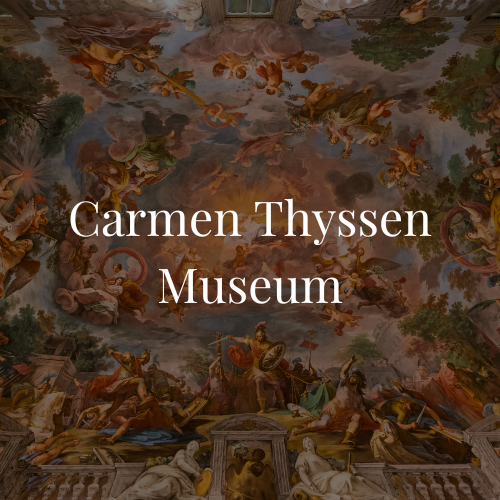 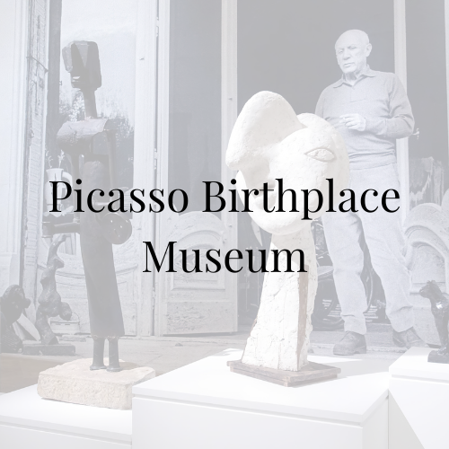 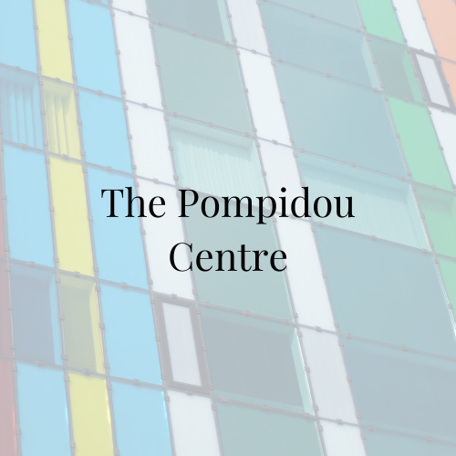 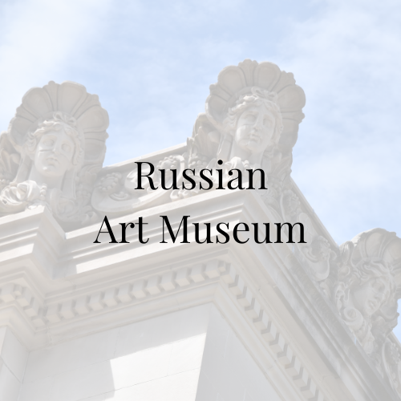 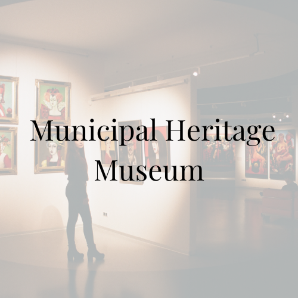 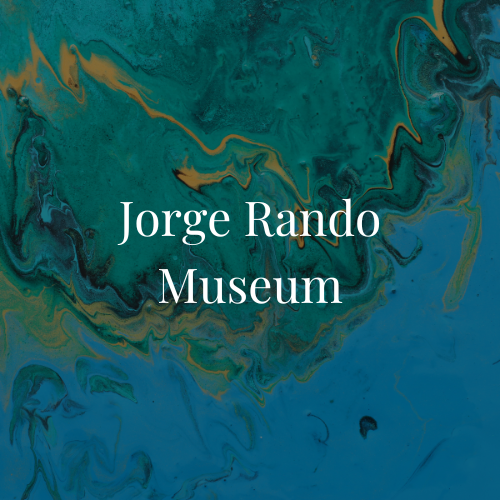 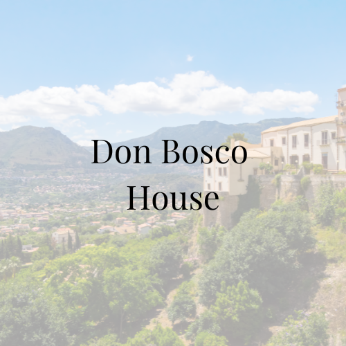
Historical Places
The Alcazaba, one of the biggest Arab fortresses in Andalusia, and Gibralfaro Castle, which offers the best views of the entire city, are great examples of historical sites in Malaga. A charming mediaeval town and a Roman theatre can be seen at the base of the castle. You will pass through the Atarazanas Market, where you may sample some vermouth, and the Cathedral, also known as "The One-Armed" (La Manquita) because of its unfinished south tower, as you stroll through the city's streets. Its roof is a must-visit place and a singular experience. We've selected the greatest historical locations to view below for a journey through time.
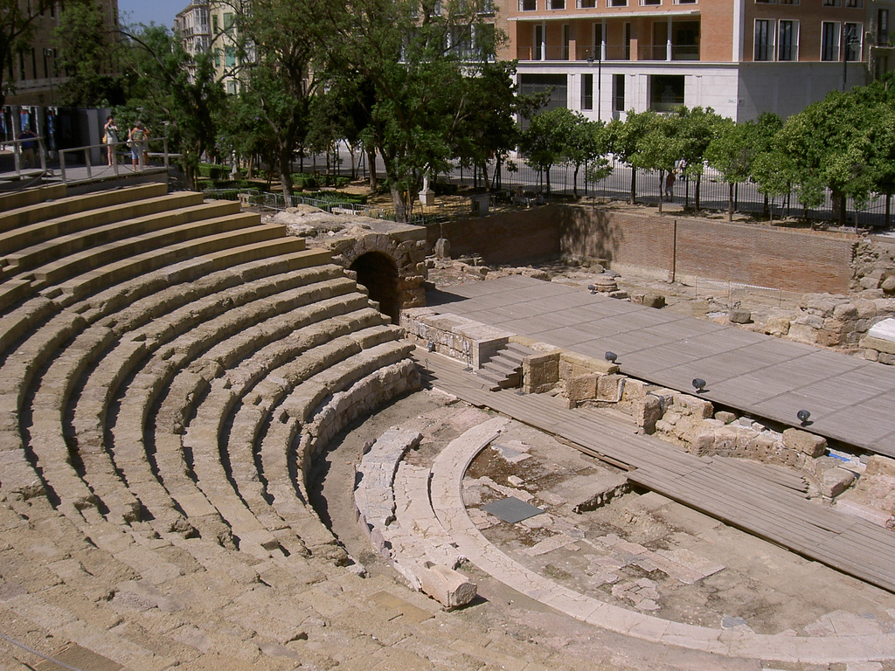
Roman Theatre
A short walk from the marina and cathedral, El Teatro Romano is Malaga's oldest monument. It is located in the city's heart, at the foot of the famous Alcazaba fortress. The theatre was built in the first century BC and remained in use until the third century AD. It was then abandoned for centuries until the Moors arrived in Andaluca. You can sit on the steps looking into the stage area, a dn try to imagine what was happening all those years ago!
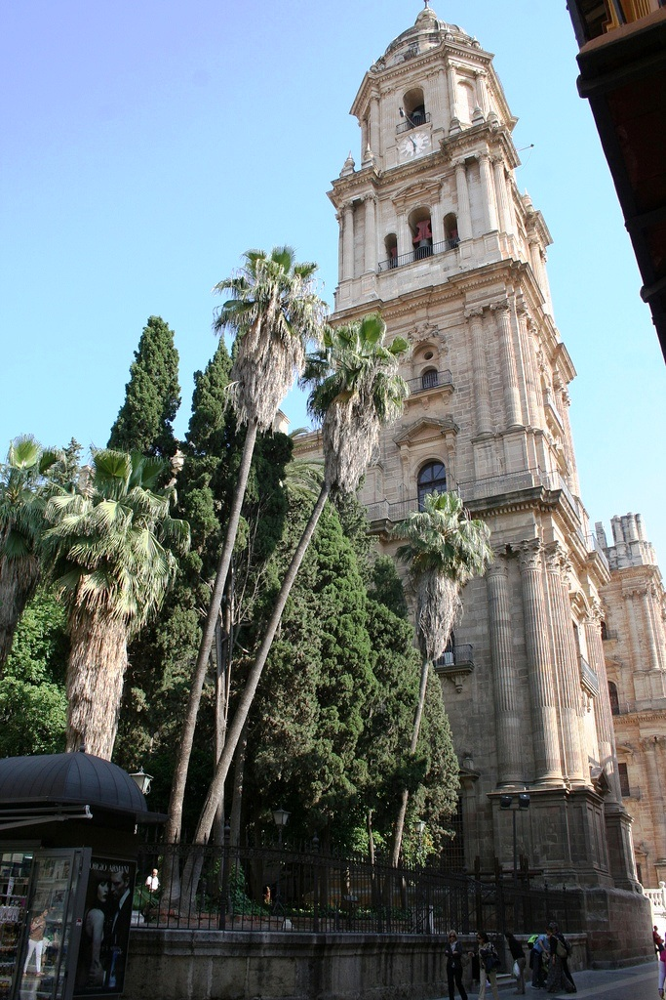
La Manquita Cathedral
Malaga was re-conquered by Catholic troops on August 18, 1487. Initially, the Aljama mosque was converted and consecrated as a cathedral. The interior design is influenced by Renaissance and Baroque styles.
A new cathedral on a north-south axis was proposed soon after. The main facade door was built in Gothic style around 1510, and it is the chapel door that leads into the gardens today. The cathedral's rooftop tour is also worth seeing, despite the fact that you must climb 200 steps!
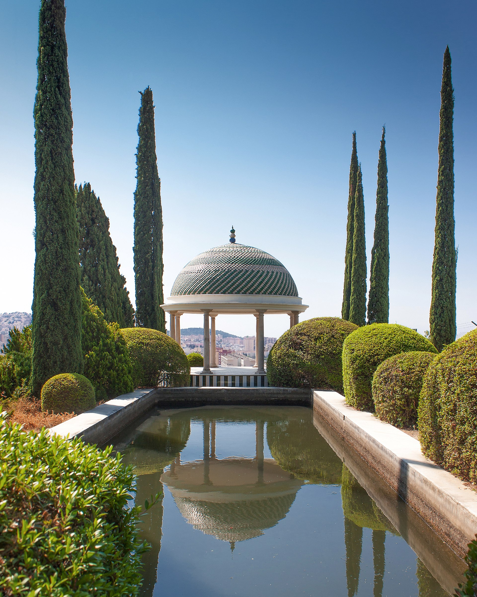
Botanic Garden
Malaga Botanical Garden is one-of-a-kind and extravagant vegetation will transport you to a tropical jungle without leaving Europe. La Concepción Botanical Garden houses a massive collection of over 25,000 plants and is divided into several sections that showcase the natural diversity of flora from around the world. Its focal point is the 3.5-hectare Historical Garden, which features over 3000 species, waterfalls, streams, fountains, greenhouses, and historical structures.
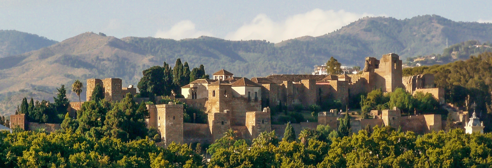
Alcazaba
An old Moorish palace with stunning views of the city and the sea. This fortress was built in the middle of the 11th century. They used materials from the annex Roman Theatre for the construction. The romantic Patio de la Alberca is particularly reminiscent of the Alhambra. It's like stepping back in time when you walk through the puerto. It's so peaceful and quiet, with lush gardens trickling with water, flowers draping from stonework in a burst of colour, and defensive forts overlooking the shoreline.
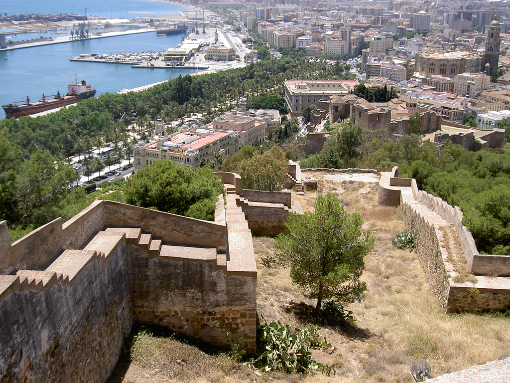
Gibralfaro Castle
The fortress of Gibralfaro tends to dominate the entire city and is located on the crest of a long rise 132 metres above sea level, with steep slopes descending toward the sea and the city. This fortress has been the great watchtower since time immemorial, used not only to observe the inhabitants settled at its feet to the west, but also the access to it by land and sea. The views are spectacular on the way up, but they only get better once you reach the top. The 22,000 steps round trip is well worth it.